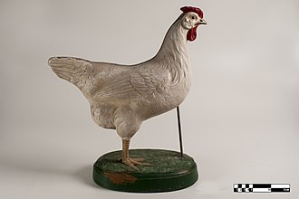
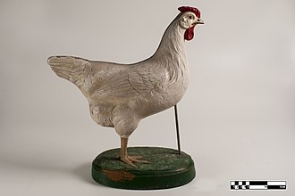
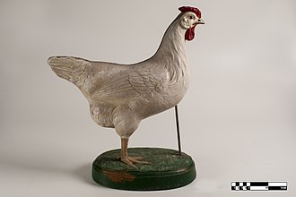

The chicken (Gallus domesticus) is a domesticated junglefowl species, with attributes of wild species such as the grey and the Ceylon junglefowl[1] that are originally from Southeastern Asia. Rooster or cock is a term for an adult male bird, and a younger male may be called a cockerel. A male that has been castrated is a capon. An adult female bird is called a hen and a sexually immature female is called a pullet.
An adult male is a called a cock or (in the United States) a rooster and an adult female is called a hen.[11][12] Other terms are: Biddy: a newly hatched chicken[13][14] Capon: a castrated or neutered male chicken[a] Chick: a young chicken[15] Chook /tʃʊk/: a chicken (Australia/New Zealand, informal)[16] Cockerel: a young male chicken less than a year old[17] Dunghill fowl: a chicken with mixed parentage from different domestic varieties.[18] Pullet: a young female chicken less than a year old.[19] In the poultry industry, a pullet is a sexually immature chicken less than 22 weeks of age.[20] Yardbird: a chicken (southern United States, dialectal)[21] Chicken was originally a term only for an immature, or at least young, bird.[when?] In older sources, chicken as a species were typically referred to as common fowl or domestic fowl.[22][page needed][failed verification] Chicken may also mean a chick (see for example Hen and Chicken Islands).[23]
Chickens are omnivores.[28] In the wild, they often scratch at the soil to search for seeds, insects, and even animals as large as lizards, small snakes,[29] or sometimes young mice.[30] The average chicken may live for 5–10 years, depending on the breed.[31] The world's oldest known chicken lived 16 years according to Guinness World Records.[32]
